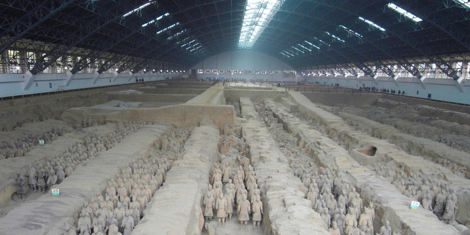
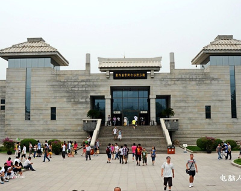

历史简况
西安，在西周时称为“丰镐”。“丰镐”，是周文王和周武王分别修建的丰京和镐京的合称。至西汉初年，刘邦定都关中，取当地长安乡之含意，立名“长安”，意即“长治久安”。
丝绸之路开通后，长安成为东方文明的中心。史称“西有罗马，东有长安”，隋时，隋文帝杨坚曾被周明帝封为“大兴都公”，因而将新都命名为“大兴城”，长安隋时也被称为“大兴城”。唐朝时，又恢复长安之名。元代，易名为“奉元城”。
明洪武二年 (1369年)，明政府改奉元路为西安府，取义“安定西北”。西安之名由此而来。
西安与雅典、罗马、开罗并称为世界四大古都，从公元前11世纪到公元10世纪左右，先后有13个朝代或政权在西安建都及建立政权，历时1100余年。
自公元前约11世纪至公元9世纪末，西安曾长期是古代中国的政治、经济与文化中心，并历来为地方行政机关——州、郡、府、路、省和长安、咸宁两县的治所。在多数朝代，西安属于郡、府级建制——京兆府（郡）辖区，元代改京兆为安西路（后改奉元路），明洪武二年（公元1369年）废奉元路设西安府，西安即由此而得名。1928年，在西安首次设市，1948年由省辖市改为国民政府行政院辖市。
中华人民共和国成立后，西安市曾经是陕甘宁边区辖市、西北行政区辖市、中央直辖市、计划单列市，从1954年以来，一直为陕西省省会所在地，现属副省级城市，辖九区、四县。 1981年联合国科教文组织把西安确定为世界历史名城。
秦始皇兵马俑陪葬坑，是世界最大的地下军事博物馆。秦始皇兵马俑是世界考古史上最伟大的发现之一。1978年，法国前总理希拉克参观后说：“世界上有了七大奇迹，秦俑的发现，可以说是第八大奇迹了。不看秦俑，不能算来过中国。”从此秦俑被世界誉为“八大奇迹之一”，已挖掘出3个俑坑。
秦始皇兵马俑博物馆位于秦始皇帝陵以东1.5公里处，建筑在秦兵马俑坑的原址之上。1979年9月底，雄伟的一号俑坑遗址展览,旅游旺季为四季皆宜.